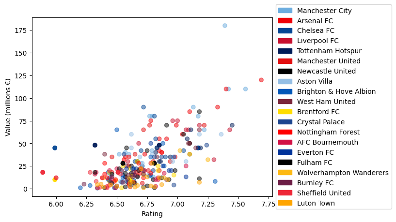
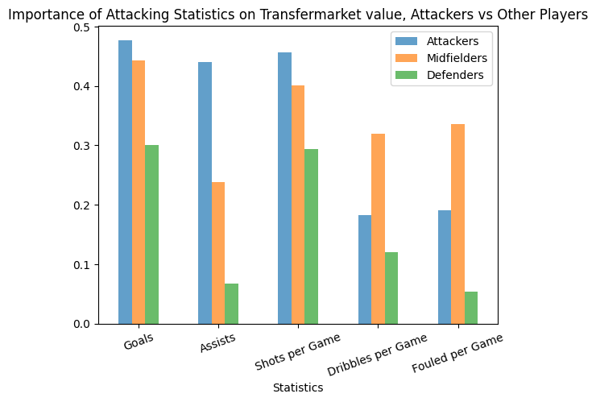
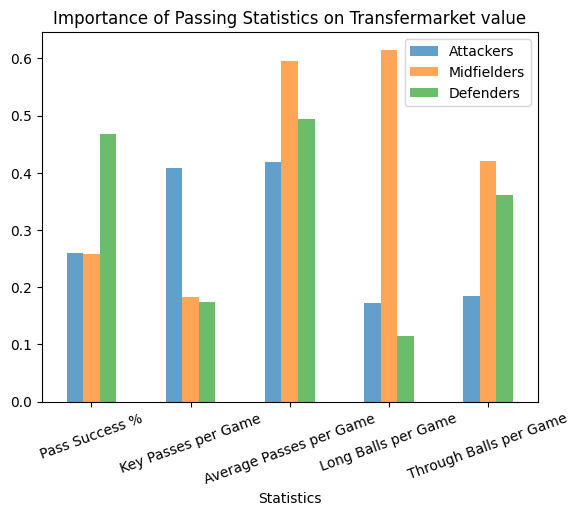
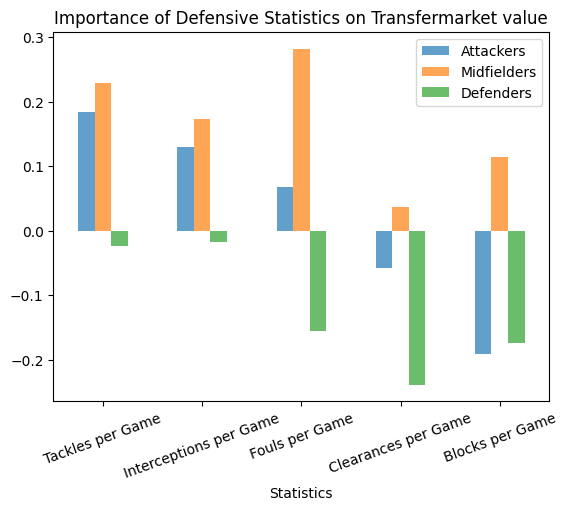
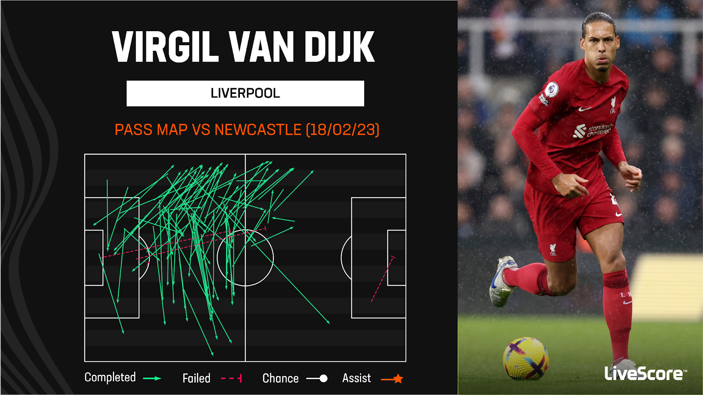

Decoding TransfrMarket: Analyzing Player Values Versus Player Performance
By Ethan Wang | May 16, 2024

Over the past several years, we’ve seen a drastic increase in the price of soccer players. 10 years ago, the transfer record was held by none other than Cristiano Ronaldo, at a fee of 100 million euros. Now, we see transfers just as expensive several times a year. But are these expensive fees worth it? How much does a player’s transfer value really represent their ability? Conversely, what stats are important for determining a player’s value?
To examine these relationships in detail, I compiled a list of Premier League transfer values from Transfermarkt, and compared them to their stats for the 2023-2024 season. To ensure that players who played once or twice in the season didn’t skew results, I filtered to only include players who had at least 5 starts for their team. I then compared them to their Whoscored average ratings for the season, which is based off of a player’s statistical performances across the game.
Of course, there are other factors to consider here. Clubs are willing to pay more for a young player with a high potential than a better player who is in the latter part of their career. There’s also factors unrelated to skill or potential like remaining contract length, foreign player status, and the financial status of the buying and selling team. But, on aggregate, we should still expect higher transfer values for better-performing players.
First, let’s take a look at the overall spread of those players’ WhoScored ratings and values. Each dot below represents a Premier League player, color coded based on their team.
There seems to be a positive correlation between a player’s average match rating and their valuation. Let’s take a look at the correlation coefficient, a value between 0 and 1 that tells you how correlated two variables are, between various stats and their value to see if there are better predictors of a player’s value.

Taking a quick look at the chart, we can see a positive correlation between several positive statistics, such as key passes (KeyP) and goals, and TransferMarket values. However, there’s also a significant negative correlation between age and value, indicating that clubs place a higher value on younger players.
However, we can go much further in depth if we group players by position. Attackers and defenders aren’t expected to have the same pass completion percent, for instance, and defenders are probably valued more for their tackling and interception ability than goals.
To visualize this, I analyzed how statistics that are seen as very relevant or very irrelevant for attackers impacted their transfer value, and compared those results to those of defenders and midfielders. In the chart below, you can see how goals, assists, and shots matter much more for attackers than other players. However, dribbles per game and fouls drawn per game matter more for midfielders than for attackers, as many midfielders are also expected to draw plenty of fouls and make progress up the field by dribbling past defenders.
I then took a look at passing statistics, which are traditionally associated most with midfielders.
Pass success rates mattered most for defenders, probably because defenders typically play safe passes and a misplaced pass will often lead to a conceded goal. On the other hand, attackers often cross the ball or play passes that are more likely to result in a lost possession, as losing possession in the opponent’s half of the field is much less risky than losing the ball in your half. We can also see the importance of key passes on an attacker’s value; they are the players put in the position of playing those passes the most, after all. There’s also a surprising difference between the positions on how important long balls are. Why? Well, it’s likely because attackers are rarely put in a position to play a long ball, as they are far up the pitch, and teams that instruct defenders to boot the ball up the field will typically have lower-valued defenders. Midfielders, however, sit in that “Goldilocks Zone” where there’s plenty of potential for dangerous long balls regardless of whether or not you are playing out from the back or booting the ball up the field.
Let’s now look at our last set of statistics, defensive ones. Defensive statistics are often prone to misinterpretation because better teams (who generally have higher-valued players), will usually dominate the ball, resulting in their defenders having less tackles and less interceptions. Let’s see if that trend has remained in the 2023-2024 season.
As expected, we actually see a negative correlation between tackles and interceptions per game and defender value. In fact, there’s a negative correlation between all of these statistics and defender value, because better teams won’t need their defense as often. Meanwhile, attackers and midfielders who make tackles and interceptions seem to be valued higher, probably because they are generally winning the ball up the field when they do so, which leads to dangerous counterattack scenarios.
But this begs the question: what statistics are correlated with defensive player values, then? Looking at our past graphs, it seems that consistency is really the place where expensive defenders shine: they make fewer mistakes on the ball, as indicated by the importance placed upon pass success rates, and are involved in build-up play, as the number of passes played per game is a major factor in a defender’s value.
To illustrate, take a look at the visual below created by LiveScore, which highlights the passing capability of one of the league’s best defenders, Virgil Van Djik, in a game last season against Newcastle.
Van Djik is an anomaly in that he is capable of performing long range passes with the precision of a playmaker, which helps him retain a high pass completion percentage. Another factor is the sheer number of passes he’s able to make in a game. Currently, he’s 7th in the league in passes completed, while maintaining a pass success rate of 90.9%, which is 22nd in the league. Of the players ahead of him, only 5 have a higher number of passes completed per game, and many of them are highly valued defenders like himself: City’s Rúben Dias, Arsenal’s William Saliba, and City’s Rodri. The other two are Brighton’s defensive duo of Lewis Dunk and Jan Paul van Hecke, who play in a pass-heavy, Tiki-Taka system.
Overally, it seems that raw statistics provide a relatively accurate way of predicting TransfrMarket values. This should come as no surprise, because TransfrMarket values are probably largely based on raw statistics. The statistics that correlate with higher values also make sense: TransfrMarket favors attackers who score and take plenty of shots, midfielders who make plenty of long, line-breaking passes, and defenders who are consistent with their passes. Some statistics, however, are less intuitive, but still logically sound: blocking and clearing the ball correlates positively with higher attacker values, and negatively with defender and midfielder values. This is likely because attackers who are able to get blocks and clearances are likely tracking back well, a very important trait to have for many attackers these days, while defenders and midfielders who get more clearances and blockers probably play on weaker teams.
It’s important to remember, however, that TransfrMarket values don’t tell the whole story. If that were the case, Chelsea would be third place in the Premier League right now, and Leverkusen would not have won the Bundesliga. But by understanding how the largest transfer value database in the world works, we can get a more accurate assessment of what the football market values in a player and perhaps even improve on TransfrMarket’s model.